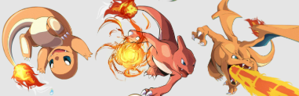
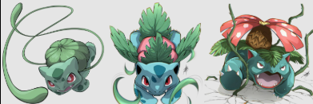
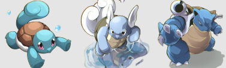

O Charmander é um Pokémon do tipo Fogo introduzido na 1ª Geração. Seu traço mais marcante é a chama na ponta da cauda, que representa sua energia vital e humor: se a chama estiver forte, ele está saudável; se apagar, ele morre. Mede 0,6 m e pesa 8,5 kg

Bulbasaur é um Pokémon inicial dos tipos Planta e Veneno da região de Kanto. Ele mede 0,7 m, pesa 6,9 kg e possui um bulbo nas costas que absorve luz solar para realizar fotossíntese. Evolui para Ivysaur no nível 16 e é conhecido por ser leal e fácil de treinar.

O Squirtle é um Pokémon do tipo Água conhecido como a Tartaruga Pequena. Ele mede cerca de 0,5 metros, pesa 9 kg e tem um casco resistente que o protege contra ataques. Quando ameaçado, ele se esconde na concha e dispara jatos de água com alta pressão
